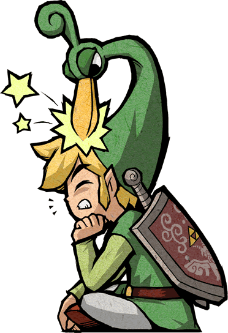

Hi! This is the comics section! Here are a bunch of links as to where you
can read zelda comics ONLINE!!!!
Zelda elements
(with the help of the wayback machine)
Azure Pixels A Link to the Past
Zelda manga
This is practically all the zelda comics on the internet. These are NOT
fan comics but officially published books.
If I put all the fan comics, it would take too long to for one page to
load! Anyway, enjoy reading these!
